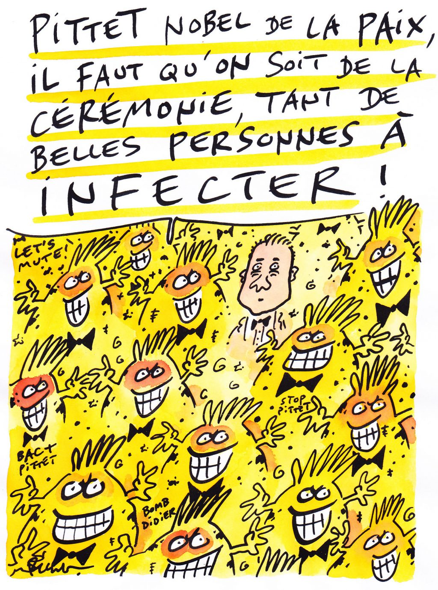

Une exclusivité dans l’epub du Geste qui Sauve
 J’ai oublié, si vous
lisez Le
Geste qui Sauve en version epub ou mobi, vous découvrirez
les illustrations de Pécub, un des
héros du livre. Ses images étaient trop belles en couleur pour
qu’on les imprime en noir et blanc. Pour vous appâter, voici un
petit supplément, envoyé cet après-midi par Pécub à Didier.
J’ai oublié, si vous
lisez Le
Geste qui Sauve en version epub ou mobi, vous découvrirez
les illustrations de Pécub, un des
héros du livre. Ses images étaient trop belles en couleur pour
qu’on les imprime en noir et blanc. Pour vous appâter, voici un
petit supplément, envoyé cet après-midi par Pécub à Didier.

Pécub